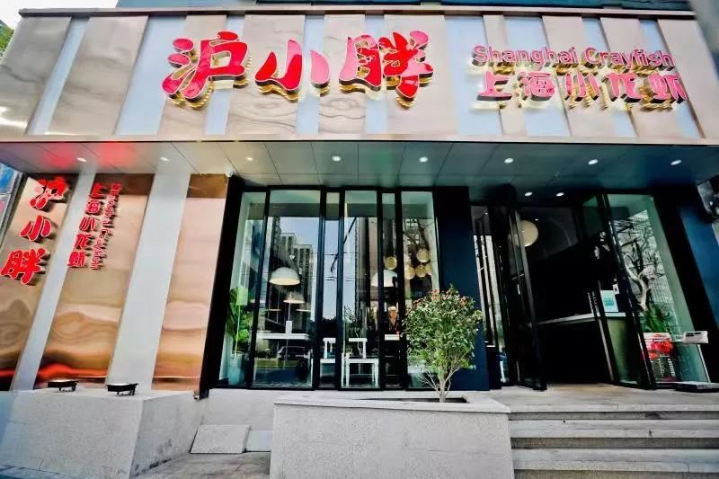
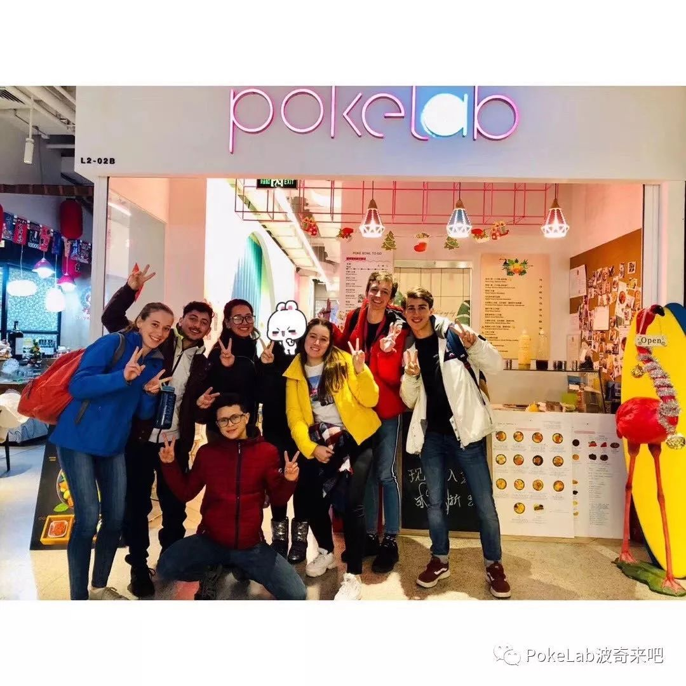

餐饮业疫情寒冬：餐厅营收普降八成，外卖小哥一天只接七单
原文链接 备份链接 相比其它行业，餐饮业是最早遭受疫情冲击的行业之一。这个春节，餐饮人正在遭受极大的心智和经营能力的考验 图/法新 文｜《财经》记者 杨立赟 编辑｜余乐 一个月前，应乾坤决定留在杭州过年的时候，没想过如今的自己会进退两难。 …

“谁能想到疫情爆发在春节期间，我们该备的货已经备齐，给员工的年终奖也已经发完，公司的现金流不多了。”
记者 | 刘娉婷
实习记者 | 陶紫东
编辑 | 王姗姗
按马纪原先的设想，2020年的龙虾季“是要打一场翻身仗的”。但新型冠状病毒疫情的爆发，彻底打乱了一切计划。
现在，作为上海网红龙虾店“沪小胖”的创始人，马纪什么都做不了，只能在家“干等着疫情过去”。往年这时候，他已经在忙活着门店的工程检修、人员招聘，准备迎接3月之后龙虾旺季的到来。
经过16年的苦心经营，“沪小胖”在上海已经开出13家直营店。食客们一年一个口味，龙虾在这两年的受欢迎程度也不比从前，马纪趁着冬天是龙虾淡季，刚投资了1000万元在上海和北京各开了一家新店谋求菜品转型，没想到突如其来的疫情，让新店的施工也卡在那里。
而眼下对于马纪来说，更大的危机是公司的现金储备能在这种长期停业状态中维持多久。
沪小胖在大年二十五（1月19日）关闭了全部的门店，500多名员工休假回家过年。现在，除了马纪自己回到上海，其他员工基本都被困在老家。马纪没想到“疫情会恶化的这么快。”

沪小胖在大年二十五（1月19日）关闭了全部的门店，至今未恢复正常营业。
13家直营店，单日的租金及人工成本就是10万元，堂食没生意零收入的局面持续上一个月，这份“固定开支”就是300多万元，一分也不能少。“西贝说它能撑三个月，但像我们这样的中小微企业，都不一定能撑到那时间。”马纪对《第一财经》YiMagazine说。
电影春节档全部被取消的同时，餐饮业盼望大赚一笔的“春节档”，在今年也同样颗粒无收。2月1日，西贝餐饮董事长贾国龙对媒体诉苦，受疫情影响，预计春节前后的一个月将损失营收7亿至8亿元。全国60多个城市400多家西贝筱面村的堂食业务基本已暂停，只保留了100多家外卖业务。
在恒大研究院近期发布的《疫情对中国经济的影响分析与政策建议》报告中显示，对比2019年除夕至正月初六，全国零售和餐饮企业实现销售额约10050亿元，而今年同期餐饮零售的收入预计将不足去年的一半，仅有5000亿元。
生意突然停摆
2019年年底，全国火锅连锁餐饮大龙燚还举办了一场斗志昂扬的年终总结会，董事长柳鸷如约给员工发完了年终奖金，并在年会上向员工勾画了2020年美好的蓝图——投资1000万元在成都建设一座新工厂，在全国继续拓展50家加盟店……
“员工们当晚都很开心。接下来，就要准备迎接春节聚餐高峰期的到来。但没想到整个春节会变成这样。”柳鸷对《第一财经》YiMagazine说。
抛开一片惨淡的春节生意，这场疫情发生的时间点，是让柳鸷最委屈的地方，“谁能想到疫情爆发在春节期间，我们该备的货已经备齐，给员工的年终奖也已经发完，公司的现金流不多了。”
成立于成都的大龙燚目前在全国拥有近300家门店，其中含子品牌在内共11家直营店。1月25日，成都市市场监督局、商务局联合发布通告，为了防控疫情蔓延，禁止本市举办群体性餐饮经营活动，解禁时间另行通知。1月26日，大龙燚旗下所有直营门店全部进入闭店状态，随后，全国各地的加盟店也相继停止营业。
去年正月初一至初九，大龙燚11家直营门店的堂食营业额高达499万元，而今年只有32万元，下降超过9成。大龙燚每个月的房租加物管费需要110万元，税金20万元，正常运营的能源费60万元左右，360多名员工的工资成本是170万元。“还好我们留了1000多万元准备建厂的钱，加上之前正常运营留下的几百万元现金储备，大概能撑一段时间。”柳鸷预计，包括加盟店受到的冲击、供应链业务的停工，今年整个上半年公司很有可能都没有收入。

大龙燚门店内，员工开工前测量体温。
在上海已经慢慢发展出19家直营店的川味宵夜品牌红料理，“大年初五全部恢复营业”的计划也全部泡汤了。初五那天，红料理品牌总监赵蓉去门店给在岗员工拜年，店内所有的椅子都背面朝上盖在桌子上——那是过去每天凌晨4点门店打烊后做清洁时才会看到的样子。
还有越来越多返乡的店员告知公司，当地的村子已经封路，可能没有办法按照原定计划初五回到门店上班。“当时的第一反应就是，人员回不了岗怎么办？还有为了保证食材的新鲜，正常情况下食材市场每天都要供货到门店，年后是否能恢复正常的供应也是问题。”直到初五，红料理只能先开放了14家门店的外卖业务，加强安全措施，等待堂食恢复。
自救刻不容缓
柳鸷回忆称，从堂食业务彻底闭店开始，他最多的时候一天要开5场会。“很多业务曾经不管的现在都要管起来，包括人员的排班、外卖业务以及安抚加盟商等。”
这两天，柳鸷已经和一位房东谈妥，对方愿意减免一个半月的租金，其他的还在沟通中。“如果不能谈减免的话，心里最差的预计是直接关掉两家效益不好的门店，因为房租实在太贵了。”
免除房租，对于短期零收入的餐饮企业是一种最直接的援助。1月26日，保利商业发布公告称，全国旗下22家购物中心年初一至初六期间，减免品牌商户6天租金。1月28日，万达商管集团宣布，将对各地所有万达广场的商户的租金及物业费实行全免政策，预计将减免租金30亿至40亿元。龙湖集团也宣布旗下商场商户减租2个月。
人员调配上，大龙燚现阶段只保留64名员工，负责三个外卖站点的制作与配送，采用轮岗的制度。为了节省开支，大龙燚采用按照比例的方式发放薪酬。根据疫情期间每月人力成本只能占据日常运营成本的一半的原则，员工当下只能拿到一部分比例的薪水，如果营业恢复正常，会将缺失的薪水补发给员工。其中，在家休息的员工，将按成都最低保障收入1200元/月发工资，总监级别以上的员工获得应得收入的60%，一线员工获得应得工资的90%，而董事会成员全部停薪。
“外卖是我唯一能够想到的增量。”柳鸷透露，大龙燚有三家生意较好的直营门店从2016年开始涉足外卖，在今年初一到初十期间外卖收入为181万元，同比增长547%。为了拉动外卖业务的销量，大龙燚发动全体员工通过朋友圈推广火锅外卖产品。如果订单量大，大龙燚还将继续增加外卖业务的站点。

门店无法正常营业，外卖业务是许多餐饮企业的唯一增量。
红料理在春节期间组成了应急小组，物资采购的周期原本为每日直送，受限于原产地特产食材供应短缺问题，导致食材损耗和缺货都很严重，每天的营业时间缩短了两小时，一旦货品不足，还要随时调整外卖菜品。原先负责堂食的员工临时转岗负责后厨清洁或者外卖打包，扩大配送员的数量。不过，红料理品牌总监赵蓉仍然认为，如果餐饮企业的堂食部分长期不能开业，只能依靠外卖，必然会形成一个不健康的财务模型。况且目前很多小区执行封锁政策，降低了消费者点外卖的便捷度，对外卖的订单量也造成了不小的影响。
柳鸷则介绍说，并非所有的餐厅都可以在短时间转型外卖，“跑流程大概就需要半个月的时间，外卖的设备加上包装也需要投入10万元左右，如果单量不先跑起来，不是会死的更快嘛。”
已经等不来“黎明”
1月31日，阿里本地生活公司发布《给所有商家伙伴的一封信》，对全国所有口碑商家免除佣金至2020年2月29日，年费延期，推出“外卖极速上线服务”，商家提交申请当日就开通外卖业务等政策扶持。
但餐饮企业更期待饿了么和美团外卖能够在武汉之外，在更多城市实施阶段性降低佣金的政策，以帮助这些目前仅剩外卖业务的企业可以渡过疫情难关。
上海一家经营夏威夷海鲜盖饭的网红餐厅Poke Lab在2月3日通过自己的微信公众号宣布“0元转让”。Poke Lab是由两个从苹果公司辞职创业的姑娘在2017年创办。她们曾体会过苹果零售店非常注重顾客体验的那一面，从人民广场一个只有14平方米的小店做起，对这番创业曾满怀憧憬，通过真材实料也很快树立了品牌口碑。
因为使用大量进口生鲜食材，从客单价上已经决定了Poke Lab的商业模式只能属于“小众网红餐厅”。截止2019年年底，它只有两家门店。据创始人刘佳介绍，生意最好的时期，两家店的月度营收可以做到30万元，毛利率则可以达到70%。但餐饮素来是一门现金流生意，对于小微规模的餐饮品牌来说，更是要对各项支出都得精打细算，而一场疫情则可以轻易击垮它脆弱的现金周转能力。

疫情对小微规模餐饮品牌而言更是一场大考。
积累了7000多个会员的Poke Lab，往年春节长假一结束便会迎来它的经营旺季。但今年已经长达20天的餐厅“0收入”局面，直接导致Poke Lab对于日益临近的去年12月和今年1月的商铺租金账期，已经无力支付。再加上店员中有老家在温州的，也有回湖北过年的，能否及时复工都是疑问。
尽管外卖渠道获得的流水收入也曾占到Poke Lab一家店的三分之一，但刘佳评估后还是认为，如果转型只做外卖并不现实。首先，和物业方签订长租合同的门店不可能被马上关停，其次外卖平台抽佣比例高，比如饿了么对Poke Lab订单的抽点达到20%，加之还要花钱做线上流量，“如果单做外卖的话，每个月没有多少盈余的，做不好还会亏。”
“现在上海有很多网红餐厅的老板，都在看天过日子。”刘佳对《第一财经》YiMagazine说，她和几个合伙人讨论后，最终决定放弃这场创业，提出0元转让的目的是为了可以尽可能继续保留餐厅品牌。而接盘方需要马上支付的成本，只是那笔即将逾期的房屋租金。
“我们不想直接就把店关掉，因为毕竟从我自己的角度上讲还是挺有感情的，我觉得如果它能活下去，这个是最好的，很多顾客也是很喜欢我们产品的。”刘佳说，她希望能把Poke Lab托付给一个手上有很多钱的人，可以有实力让餐厅再次“活蹦乱跳地出现在顾客面前”。
本文版权归第一财经所有，
未经许可不得转载或翻译。

原文链接 备份链接 相比其它行业，餐饮业是最早遭受疫情冲击的行业之一。这个春节，餐饮人正在遭受极大的心智和经营能力的考验 图/法新 文｜《财经》记者 杨立赟 编辑｜余乐 一个月前，应乾坤决定留在杭州过年的时候，没想过如今的自己会进退两难。 …
原文链接 备份链接 图片来源：图虫 记者：张钦 编辑：昝慧昉 “ 此前海底捞发布公告称，考虑到近期疫情发展情况，中国内地门店停业时间将会继续延长。 ” 近日，江苏省常州市发布《关于紧急扩散寻找相关接触者的通知》：常州市在排查确诊的新型冠状 …
原文链接 备份链接 在防控的前提下，推动各类生产企业复工复产，成为近日各地的着眼点。然而，疫情仍在肆虐，对众多中小微企业的影响也在逐渐体现。 为帮扶受疫情影响的中小企业，苏州、上海、北京、珠海等地都出台了相关帮扶举措。 2月2日，江苏省苏 …
原文链接 备份链接 11.02.2020本文字数：4000，阅读时长大约8分钟 导读：企业虽然很艰难，但目前要做的就是配合执行国家的各项要求，早日战胜疫情，企业能早日找到出路。 作者 | 第一财经 张苑柯 元宵节刚过，疫情之下第一批复工 …
原文链接 备份链接 图片来源：视觉中国 记者：侯瑞宁 “ 随着企业陆续复工，私家车出行有一定增加，汽油需求会有好转。短期内，汽油需求难以恢复正常水平。 ” “春节到现在，加油站每天的汽油销售量只有春节前的20%，这两天甚至下降到 …